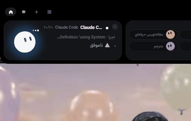

A tiny friend that lives in your notch
Roadeep watches your Claude Code sessions, lets you approve its requests from the notch, and keeps an eye on Stripe, GitHub, Vercel, n8n and more. Free and open source.

Private by design. No account, no analytics, no tracking. Your keys stay in your Keychain, or in Windows Credential Manager.
Read the privacy policy.
Requires macOS 15 or later. No notch? Mochi sits in a small bar at the top of the screen. The Windows download is paused for now: Microsoft Defender wrongly flags the unsigned installer, and it will come back once that’s fixed. Windows users can build it from source.